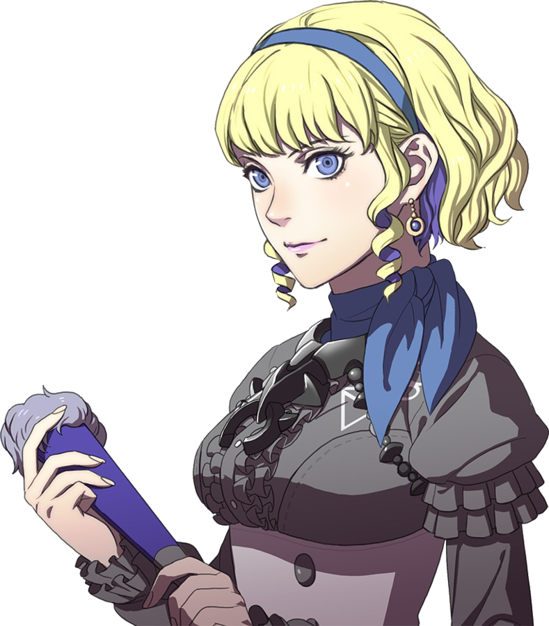
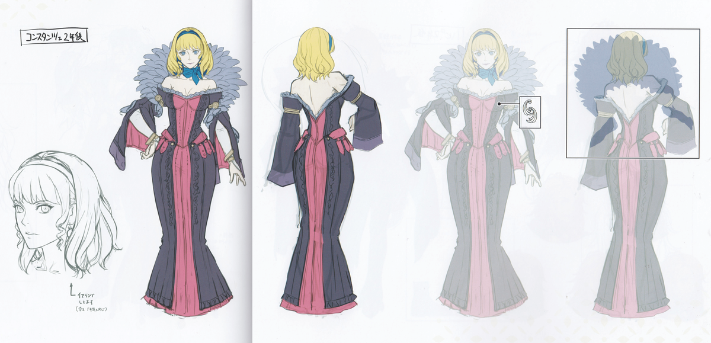

Constacne is one of the members of the Ashen Wolves, residing in the underground town, Abyss. She's a magic user and is often frown upon by others. This is due to her obsession with magical experiment and her sometimes rude behavoir
All four of the Ashen Wolves have a reason for being at the Abyss. If you couldn't tell by her design, she is a noble. A former one at that. When she was a child, she used to reside in noble territory in the Empire that her family owned. Though, her parents and older brother tragetly lost their lives in a war(This war happens before the events of Three Houses). With no one left in her family, House Nuvelle was abandoned. It was years later when Constance decided that it was up to her to restore her nobility. She achived impressive magical feats. But, tend to get careless at times. Eventaully, at 18, she was invited to join the Ashen Wolves
Constance has a personality far different from most characters. She is polite towards everyone around her, regardless of their socail level. But, she tends to be domineering towards almost everyone. Sometimes, she will belive that helping restore her nobility is a honor as grand as being blessed by a goddess. She also speaks loudly and laughs... a lot.
Though, Constance does have another side, that seems to be almost an entirely different person. Due to the truama of her parents death, she has gained a split perosanlity disorder. Specifically, when she's in the sunlight, her mood will completely change. Her sunlight personality is very humble yet has a severe lack of self confience, beliving that her otherself is chasing a dream no longer possible. She also belives that others shouldn't waste their kindess on her. I should specify that depsite being depressed, she thankfully vaules her own life. She is also shown to care about her friends even more.
Constance sometimes has this, evil rich woman laugh. Kind of the ones you would hear in old disney movies. In the spinoff, Three Hopes. Almost every character gets a slight character change due to this being a alternative timeline. I'm pretty sure Nintendo told the voice actor for Contsance, Kristan Day, that she needs to have an EVEN MORE evil laugh. They also continued this evil rich woman trope by making her timeskip outfit in Three Hopes more... classy?

This is the offical design sheet for the Gremory class in Three Hopes. Three Hopes isn't even that good of a game so don't worry, you aren't being spoiled by this design, but I'll leave out her Three Houses timeskip outfit. Just know her hair and outfit is completely different.
The writers also changed her perosnality slightly to where she is far more reckless with her magical experiments, more than willing to test her spells on anyon if they happened to get curious. In her Interaction with Claude, she used a spell that caused his hair to spike up like tall grass for the rest of the week.
But back to Three Houses, her magic overall is impressive. She also gets the most attacking spells in the game. But lore wise, it's kind of insane with some of her spells, they could threaten the church itself. I mentioned that Constance is good at magic but she also can excell at the brawling class for some reason? This is mainly because of the Brawling/magic class, Holy Monk (Though, her top prefered is the the magic/flier class, dark flier) but, it's still funny to imagine her fighting all three house leaders at once and winning. Lastly, I should mention that she has an ability that has a 40% of not consuming durability of magic.. combine that with her stupidly high range spell that can hit almost any across the map... Yeah she was the only reaons I orginally got the Three Houses DLC.
Couldn't fix the video quality.
Also Shez is the main character of Three Hopes. You probably won't get spoiled with her interactions with male and female Shez
I'm putting a a third warning because you will get spoiled. Here is a forth spoiler warning if you are planning to play Three Houses
Fire Emblem is owned by © Nintendo
This comcludes the Three Houses (And somewhatt also Three Hopes) html thing.